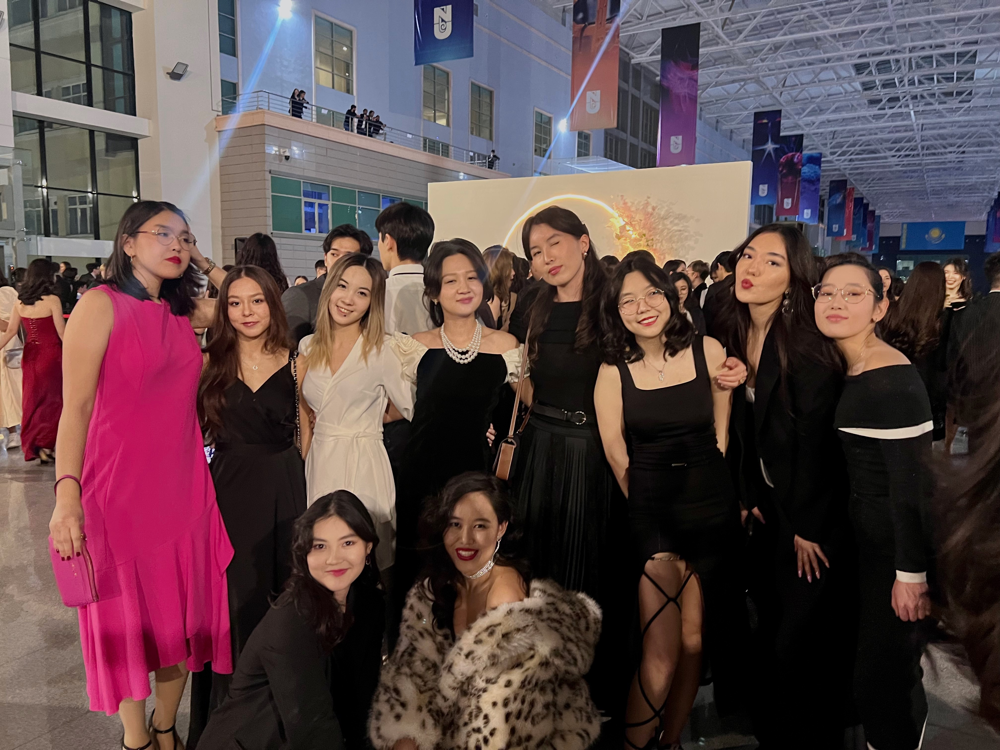
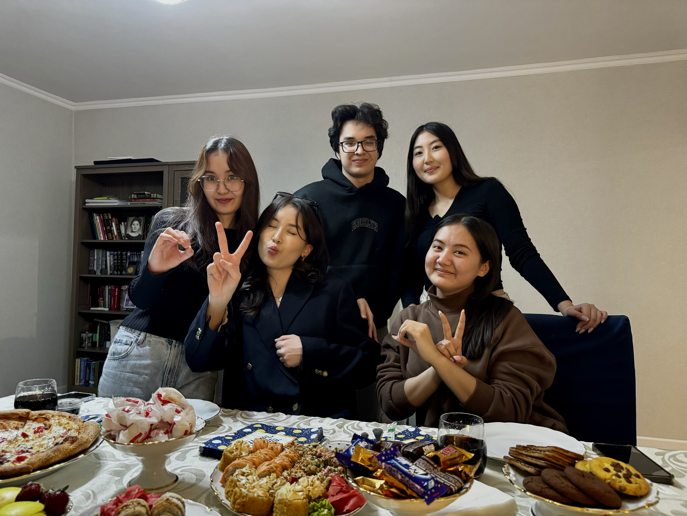
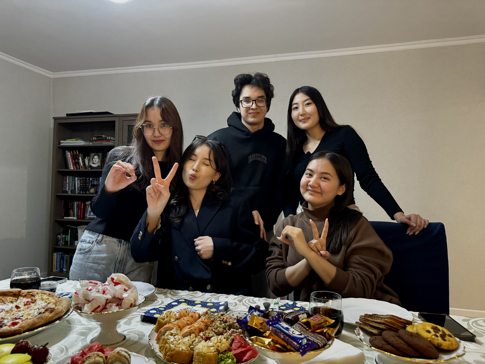
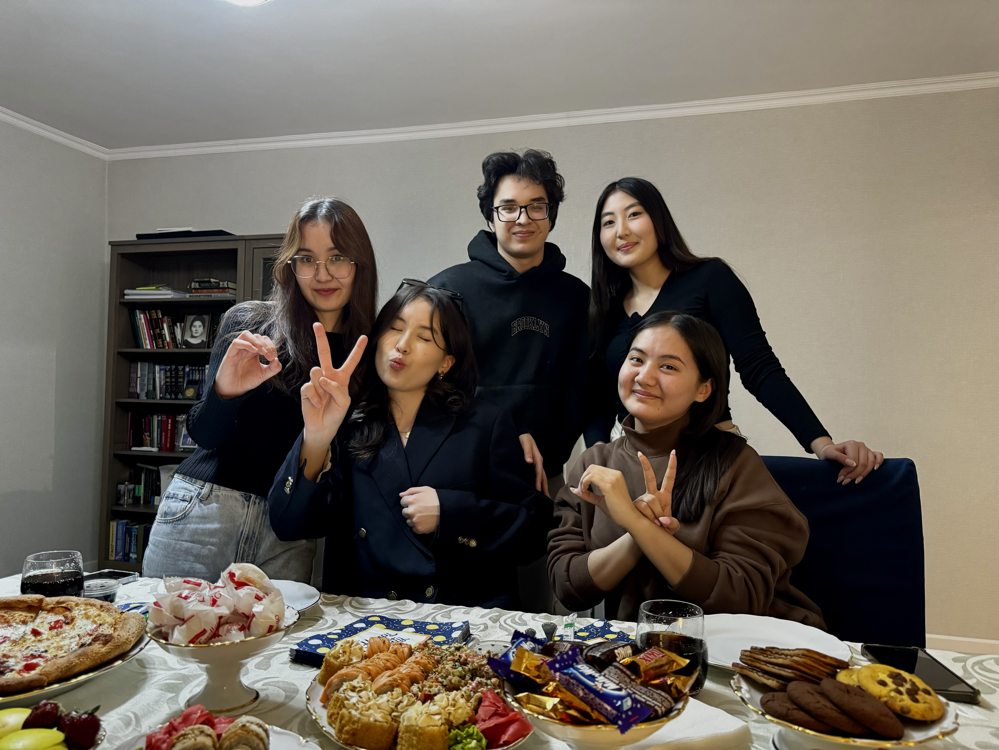

Welcome!
Hello everyone! My name is Tansu, I’m 20 years old and I was born and raised in Almaty but now live in Astana, where I study at Nazarbayev University. My parents wanted me to be a strong and influential person so they decided to name me after Turkish first and only female prime minister Tansu Çiller. Unconscious of this, I decided to pursue my studies in Political Science and International Relations at Nazarbayev University because as childish as it would not sound, I really wish to bring a positive impact to my country. One of the biggest things that NU has surrounded me with are people. I have also acquired a lot of very close-minded people that have supported me all throughout my 4 years at the university!

 

